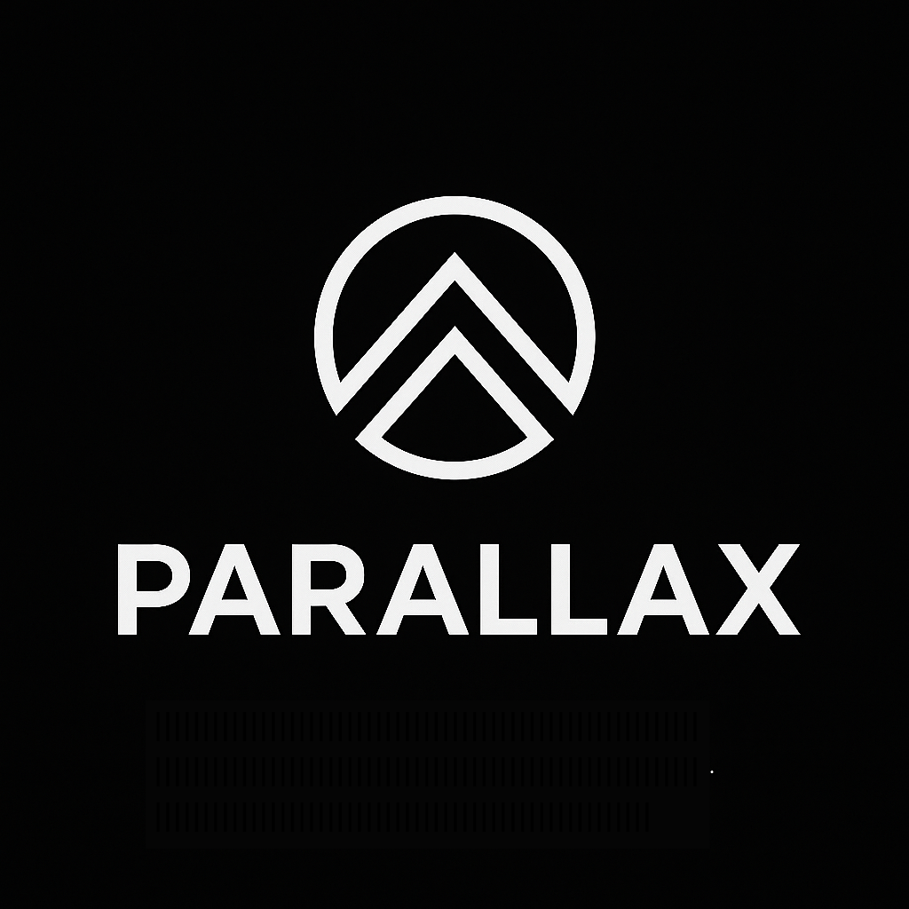

Parallax Core
Development, testing, maintenance and future releases of the official Windows full-node wallet and miner.

Parallax is an independent open-source cryptocurrency, blockchain network and software ecosystem. Sponsorship helps support the infrastructure, development and services that keep Parallax available to users, miners, developers and the wider community.
Sponsorship contributions can help cover the ongoing costs associated with maintaining and improving the Parallax ecosystem.
Development, testing, maintenance and future releases of the official Windows full-node wallet and miner.
VPS hosting, public node services and other infrastructure used to support the Parallax network.
Hosting and maintenance of the public Parallax blockchain explorer and network-status services.
Software signing, security tooling and related services that help improve release trust and distribution.
Official website hosting, technical documentation, public resources and developer information.
Community infrastructure, support resources and services used to help people participate in Parallax.
Companies and organisations can support Parallax through a professional sponsorship arrangement. Sponsor recognition may include the organisation's name, logo, a short description and a link to its official website on this page.
Sponsor links are identified as sponsored links. Sponsorship is intended to provide transparent recognition and brand visibility for organisations that support Parallax, not to sell search-engine ranking or influence.
Sponsorship does not provide control over Parallax consensus rules, blockchain operation, development decisions or the independent operation of the network.
No corporate sponsors are currently listed.
Organisations interested in supporting Parallax can contact the Parallax Core Developers to discuss sponsorship and recognition options.
Future sponsor website links will be marked with the appropriate sponsored relationship attribute.